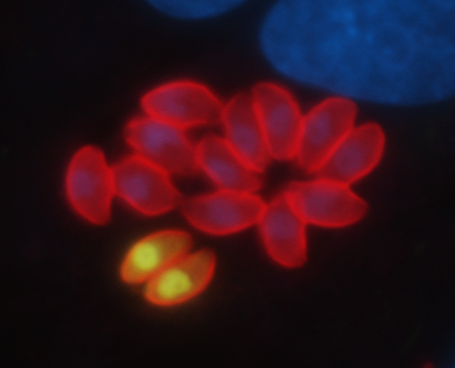

Nearly one third of the world’s population is infected with Toxoplasma gondii. Although most infections are asymptomatic, toxoplasmosis can be life-threatening during pregnancy and in people with immune systems weakened by immunosuppressants or AIDS. T. gondii can only multiply within cells of its host, and repeated cycles of host cell invasion, parasite multiplication and host cell lysis are a major cause of the tissue damage that occurs during acute infection. A better understanding of the mechanisms of host cell invasion by T. gondii is therefore important to the development of new approaches to treating toxoplasmosis. T. gondii is also a powerful model for studying the invasion of related apicomplexan parasites, including those that cause malaria and cryptosporidiosis.
A major focus of our research is to identify T. gondii proteins that play a role in invasion and to determine exactly what these proteins do. We are studying the function of one protein, AMA1, in detail, and we have developed more general, small-molecule-based approaches to identifying new invasion-related proteins. The small molecule work has also led us to study the molecular mechanisms underlying parasite motility.
AMA1 Proteins
AMA1 proteins secreted onto the parasite surface from apical organelles, the micronemes, are thought to play an important role in invasion. One highly conserved microneme protein that has received much attention as a malaria vaccine candidate is apical membrane antigen 1 (AMA1). AMA1 is a type I transmembrane protein with a large extracellular domain and a short cytosolic tail. AMA1 directly mediates the physical interaction between the parasite and host cell: remarkably, the extracellular domain of AMA1 on the parasite surface binds to a receptor on the host cell (RON2) that is inserted into the host cell membrane by the invading parasite. We are currently studying two aspects of T. gondii AMA1 critical to its role in mediating invasion: (a) the function of its cytosolic tail and (b) why and how its extracellular domain is cleaved and shed from the parasite surface during invasion.
Small-molecule-based approaches
One approach we are taking to identify new invasion-related proteins is to screen large collections of small molecules for compounds that inhibit invasion and then determine how these compounds exert their effects. The screening part of this project has yielded a set of small molecules that affect invasion in a variety of interesting ways; the challenge now is to identify their targets within the parasite. We have developed specific biochemical and genetic strategies for target identification, and we have gained new insights into invasion in the process. We are currently using these methods to understand how the compounds of most interest from our screens and from the screens of others perturb host cell inavsion. In addition to providing new insights into the mechanisms underlying invasion, this work has clear drug development implications for T. gondii and other apicomplexan parasites. This project is being done in close collaboration with Dr. Nick Westwood at the University of St. Andrews.
Motility
Parasite motility is important for parasite movement into and out of host cells, for crossing biological barriers and for dissemination through the body during infection. Parasite motility is therefore essential for virulence and pathogenesis. Proteins of the parasite’s motility apparatus, including the myosin motor protein, MyoA, are highly conserved across apicomplexan parasites but absent or divergent in higher eukaryotes, suggesting that they may be useful drug targets. Intriguingly, over 90% of the invasion inhibitors identified in our small molecule screens affect parasite motility. We have shown that one of the compounds we identified by high-throughput screening (tachypleginA) inhibits motility by covalently modifying myosin light chain, a protein that directly regulates MyoA activity. Using tachypleginA and other motility-inhibiting compounds as chemical probes, together with parasites containing mutations in proteins of the motility apparatus and a variety of assays we have developed to study motor function such as our recently described 3D motility assay, we are attempting to develop a detailed mechanistic understanding of how T. gondii and related parasites move between and into cells of their hosts during infection.
To see movies of moving and invading parasites, click here
